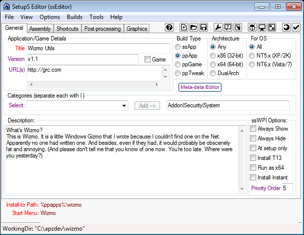
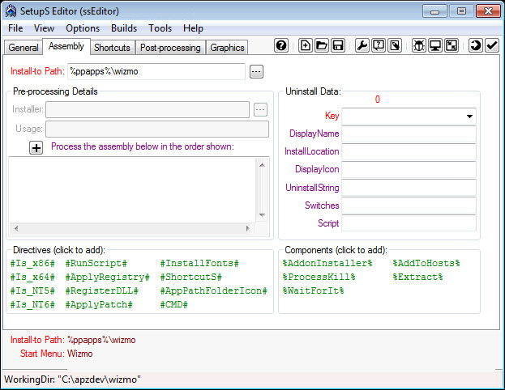
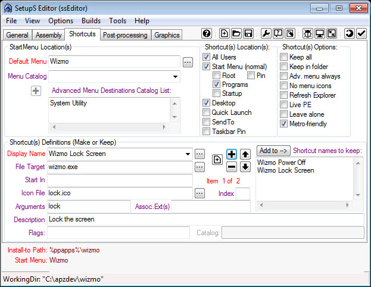
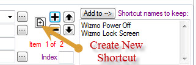
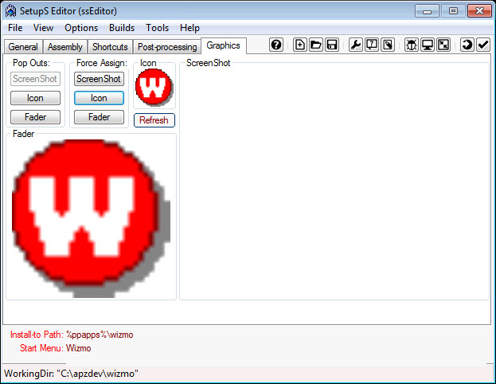
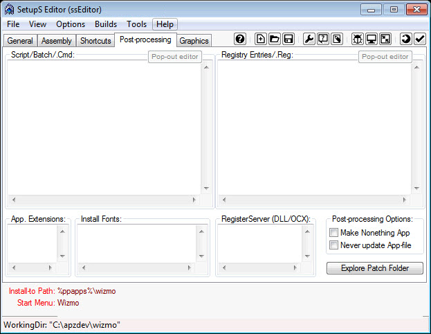
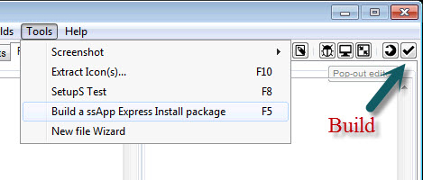

Creating a ppApp 


1. Preparation.
- Create a temporary "build" folder. Such as apzdev in the root of the drive c:\apzdev
- under this directory create a working folder of the app name.
- In this example create a folder wizmo C:\apzdev\wizmo
- Under this create a directory ppApp
- copy the file wizmo.exe to the directory C:\apzdev\wizmo\ppApp.
- Right-click the C:\apzdev\wizmo folder and Sendto "SetupS Editor" this will open up the ssEditor.

- Ensure 'ppApp' is the "Build Type".
- Enter in the Title of the application in the Example "Wizmo Utils"
- Enter in the version of the application in the Example "v1.1"
- Enter in the URL of where the application can be located to enable users to find updates in the Example http://grc.com
- Enter in a description of the application, this information can be found at the URL or the help file of the application.
- Select the categories for the application, and click the "add" button for each one.
2. Assembly tab
- Check that the "Install-to Path" is correct.
- Type in %ppapp%\[apppath] replace [apppath] with the application name, with no spaces, in the example wizmo so the "Install-to Path" will have %ppapp%\wizmo

3. Shortcuts tab

- Default menu - Enter in the default group that will be used to store the shortcuts in the example 'Wizmo'
- Menu catalog - add in the catalog entries in the example 'System Utility'
- Shortcuts Definitions - Display name, type in a shorcut name in the example 'Wizmo Lock Screen'
- File target - select the file that will run in the example 'Wizmo.exe'
- Icon file - select the icon file that will be displayed with the shortcut in the example 'lock.ico'
- Tip: some icon files can be extracted using the utility 'Extract Icons' found under the Tools Menu.
- Arguments - add in any arguments that will be used with the run file in the example 'lock' this will have the command 'wizmo.exe lock'
- Description - enter in a brief description of what the shortcut will do, in the example 'Lock the screen'
- To add another shortcut click on the create new shortcut button as shown in the figure below

- Shortcuts Definitions - Display name, type in a shorcut name in the example 'Wizmo Power Off'
- File target - select the file that will run in the example 'Wizmo.exe'
- Icon file - select the icon file that will be displayed with the shortcut in the example 'wizmo_15.ico'
- Arguments - add in any arguments that will be used with the run file in the example 'exit' this will have the command 'wizmo.exe exit'
- Description - enter in a brief description of what the shortcut will do, in the example 'Power off computer'
- Shortcut locations - Select Start Menu - Programs,
- Optional select Desktop, this will add the first shortcut in the example 'Wizmo Lock Screen'
4. Graphics tab
- Select the icon that will be shown in the application directory in the ppApps folder
- Select the fader graphic that is in PNG graphic format
- Select the screenshot that is in JPG graphic format

5. Post-processing tab
- Examiine this to see if anything needs to be added. With some ppApps additional data such as registry entries will be required. In the example there is no additional data required.

6. Build
- IMPORTANT NOTE: This step is only available if building archive deployment packages (.apz/.pgz). Otherwise, the "Build" folder is complete for the ssWPI (folder) deployment package and no further action is required.
- Check your Build options. Click Menu "Builds" and select options for how the builds will be done.
- Finally, when ready, click "Tools, Build (F5)" -- or click the "Build" button on the Mini-Toolbar.

7. Test
- To test, simply double click on the .app or .apz file created by ssEditor.
Copyright © 2020, Vergitek Solutions
ssTek Forum: Tools for custom Operating Systems!